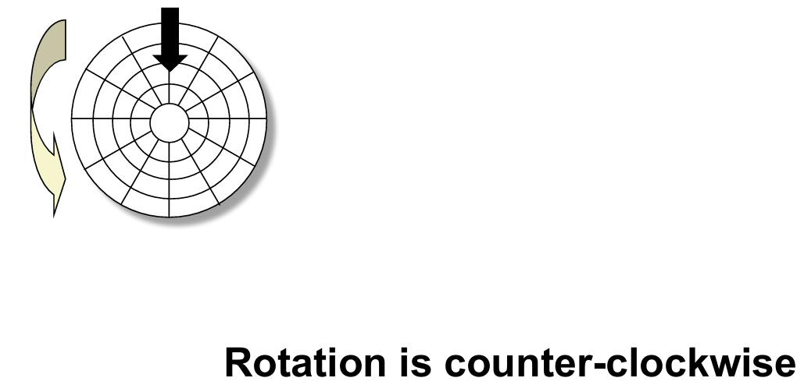

System Programming week 10
Random-Access Memory (RAM)

SRAM vs. DRAM summary
Nonvolatile memories
Traditional bus structure connecting CPU and memory
Memory read transaction
What’s inside a disk drive?
Disk geometry
Disk capacity
Recording zones
Computing disk capacity
Disk operation (single-platter view)
Disk operation (multi-platter view)

Disk structure - top view of single platter
Disk access


Disk access time

Logical disk blocks
I/O bus
Reading a disk sector
Solid State Disks (SSDs)
SSD tradeoffs vs. rotating disks
The CPU-memory gap
Locality to the rescue!
Example memory hierarchy
Locality